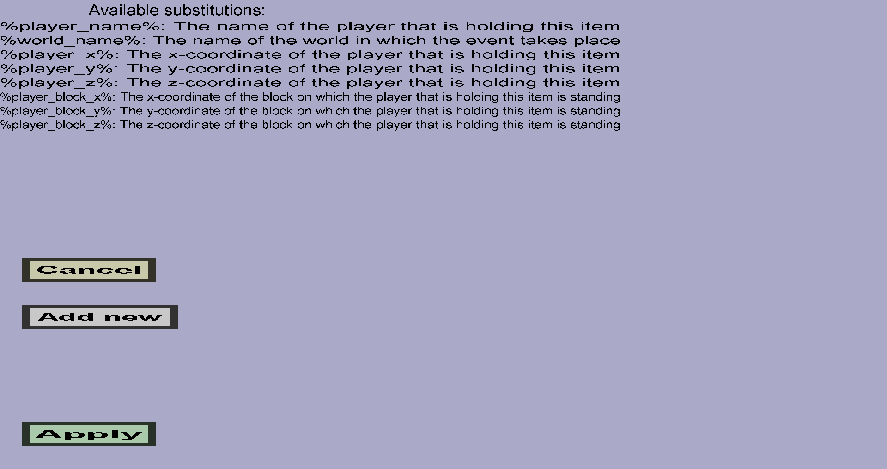

The command list can be used to configure the commands that will be executed if the corresponding event occurs for
the corresponding custom item. It should look like this:

Available substitutions
The top of the page shows which substitutions are available for this event. The available substitutions differ
per event, but the first 8 substitutions (%player_name%, %world_name%, ...) are available for all events.
Substitutions are special text patterns that you can put inside commands, and will be replaced with something else when the
command is executed. For instance, the substitution %player_name% will be replaced with the name of the player that
holds the custom item. So if you would configure the command to be give %player_name% stick and player knokko
uses the custom item, the final command will be give knokko stick, which will give knokko a single stick.
General buttons
-
The 'Cancel' button will take you back to the command event list and discard all
changes you made on this page.
-
The 'Apply' button will take you back to the command event list and keep all changes
you made on this page.
-
The 'Add new' button will add a new empty command. You need to configure this command before you click 'Apply'.
Per-command properties
For each command, you can configure the following properties:
-
The raw command that will be executed. This is the upper text edit field.
-
The entity that should execute the command. This can be either the console or the player. If you
choose to use the player, you need to ensure that the player will have the right permissions to execute the
command! You can change this command executor by clicking the (Console) button on the bottom-left.
-
The chance that the command will be executed (the percentage). You are allowed to use non-integer chances
as well as integer chances. If you keep it 100%, the command will always be executed when the event occurs.
-
The cooldown of the command, in ticks. 1 second = 20 ticks! For instance, when the cooldown is 100 ticks
and the event occurs, the command can only be executed once every 5 seconds. Players can not use multiple
item stacks of this custom item to bypass the cooldown (all item stacks of the same custom item share the same
cooldown).
-
Activate cooldown when chance fails. This property is only relevant when the chance is smaller than 100% and
the cooldown is larger than 0. It determines what happens when the event occurs, but the command is not executed
due to the Chance. Consider the case when the chance is 50% and the cooldown is 100 ticks. When the event
occurs, there is 50% that the command will be executed. If the command is executed, it can't be executed again
during the next 5 seconds, regardless of whether this checkbox is checked. When the command is not executed,
this checkbox determines what will happen:
-
If the checkbox is checked, the command can not be executed during the next 5 seconds.
-
If the checkbox is not checked, the command can still be executed if the event occurs again within
5 seconds.